Loïs Courtade
Loïs Courtade
Expériences professionnelles
Quatre stages en gestion, création et événementiel, et deux fonctions de secours que j’exerce en parallèle de mes études.
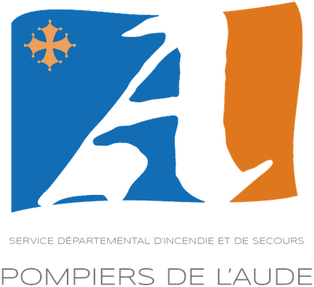
4 saisons · depuis 2023
SDIS de l’Aude · Leucate
Chef de poste
Sapeur-pompier nageur sauveteur

Chaque été, je suis sapeur-pompier nageur sauveteur sur le secteur de Leucate. Chef de poste, je reste avant tout secouriste de terrain : surveillance, sauvetage aquatique, premiers secours et prévention auprès du public. Mais le rôle de chef de poste est aussi un vrai rôle de gestion : j’encadre une équipe, j’organise le poste sur le plan humain comme matériel et je dois répartir les ressources avec discernement. Envoyer des sauveteurs ou du matériel sur un point chaud, c’est risquer d’en manquer ailleurs : la bonne gestion des moyens est donc déterminante pour la sécurité de toute la zone.
Résultats
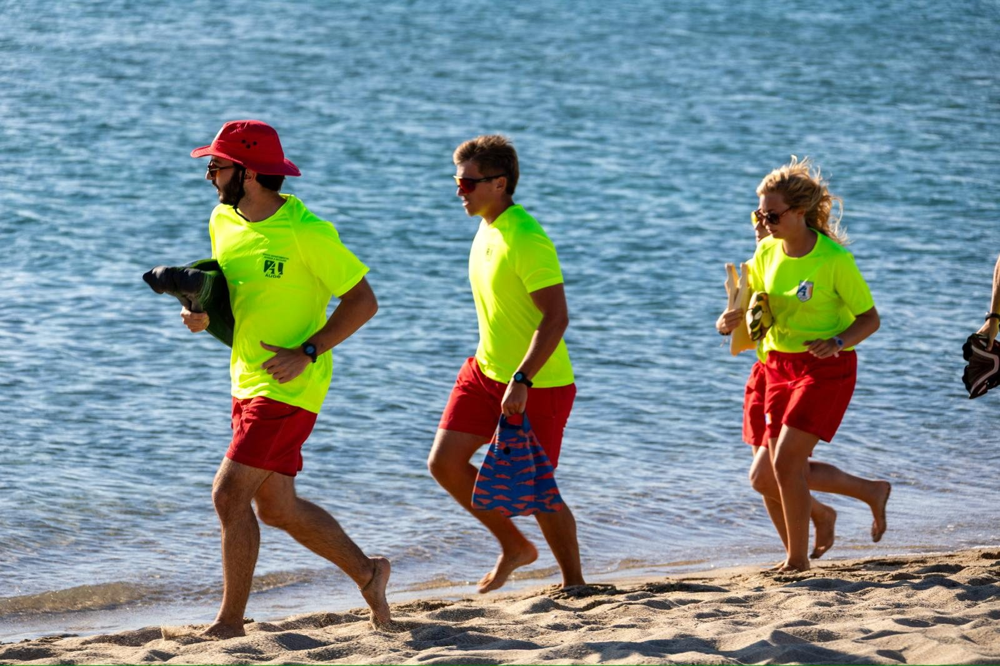
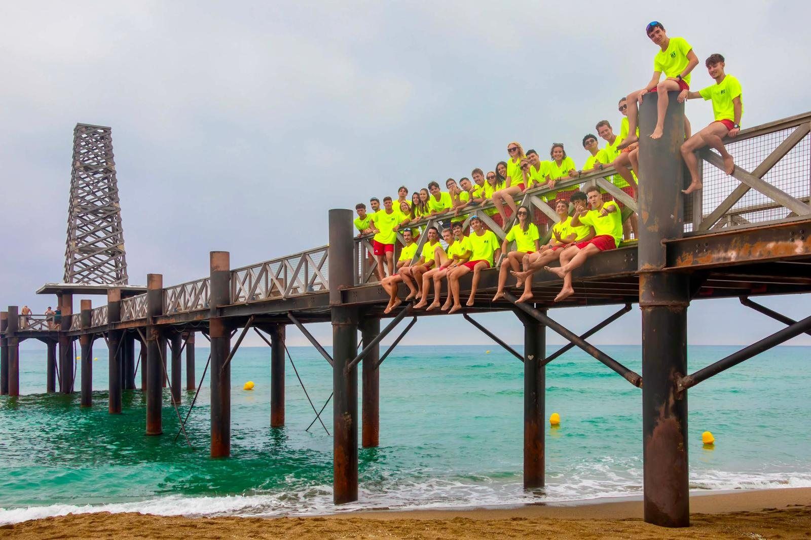
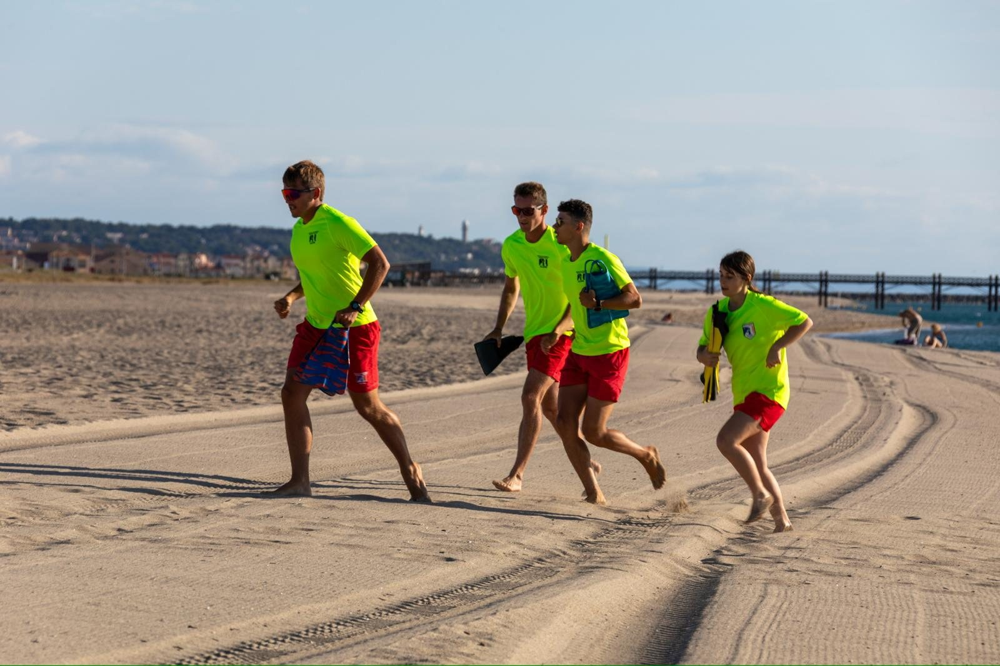
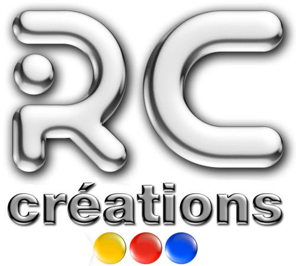
2026 · 3 mois
RC Créations · Roanne
Stage de fin de BUT
Assistant du dirigeant

Stage de fin de BUT GEA chez RC Créations, une entreprise de personnalisation et de création d’objets, de textile et de merchandising à Roanne. En tant que stagiaire, j’ai assisté le dirigeant sur de nombreuses tâches : gestion, comptabilité, création et marketing.
Résultats
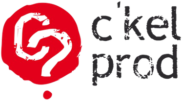
2025 · 3 mois
C’KEL PROD ? / PM Productions · Saint-Étienne
Stage
Assistant gestion événementielle

Stage au sein de PM Productions, sur l’organisation du festival Paroles & Musiques à Saint-Étienne. J’ai découvert la gestion d’un événement culturel d’envergure, de la préparation à l’accueil du public.
Résultats
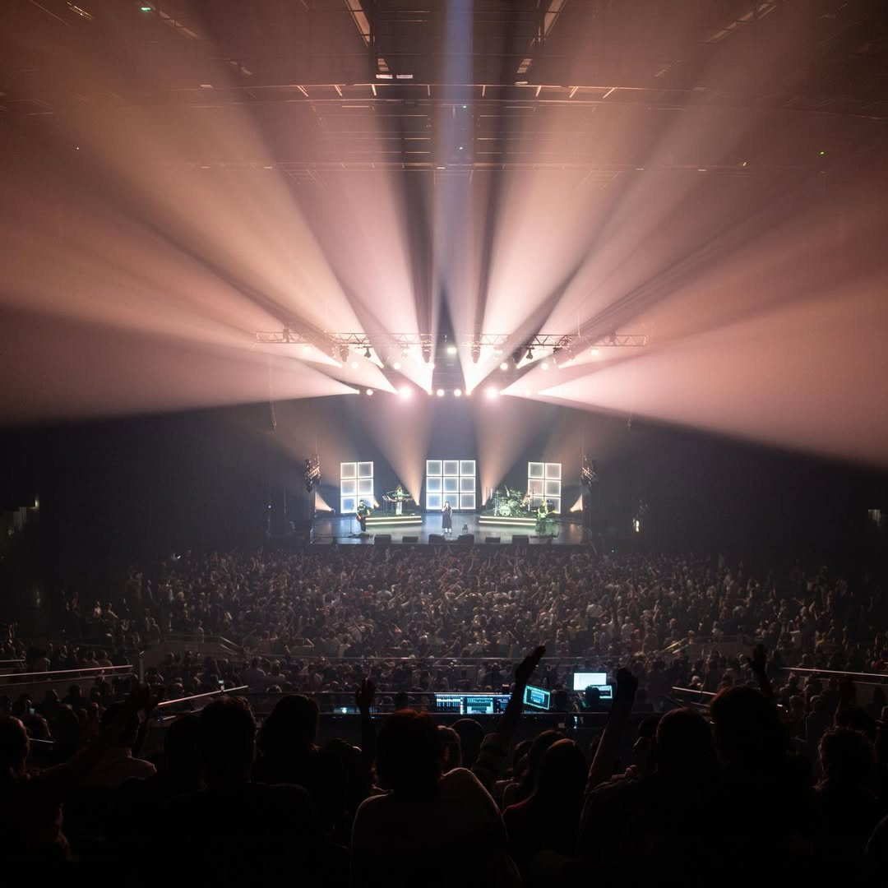
2024 · 1 mois
WinPub · Saint-Étienne / Lyon / Roanne
Stage
Stagiaire commercial
Premier stage du BUT, côté commercial et achats, dans une entreprise d’objets et de supports publicitaires.
Résultats
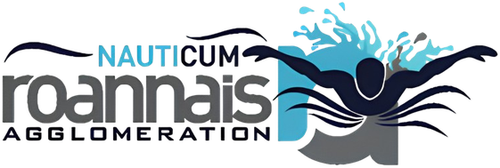
Depuis 2023
Équipements sportifs du Roannais
Contrat étudiant
Secouriste

En parallèle de mes études, j’interviens en tant que secouriste sur les équipements sportifs du Roannais : la piscine et la patinoire. C’est un contrat étudiant que j’honore tout au long de l’année, en complément du sauvetage côtier estival.
Résultats
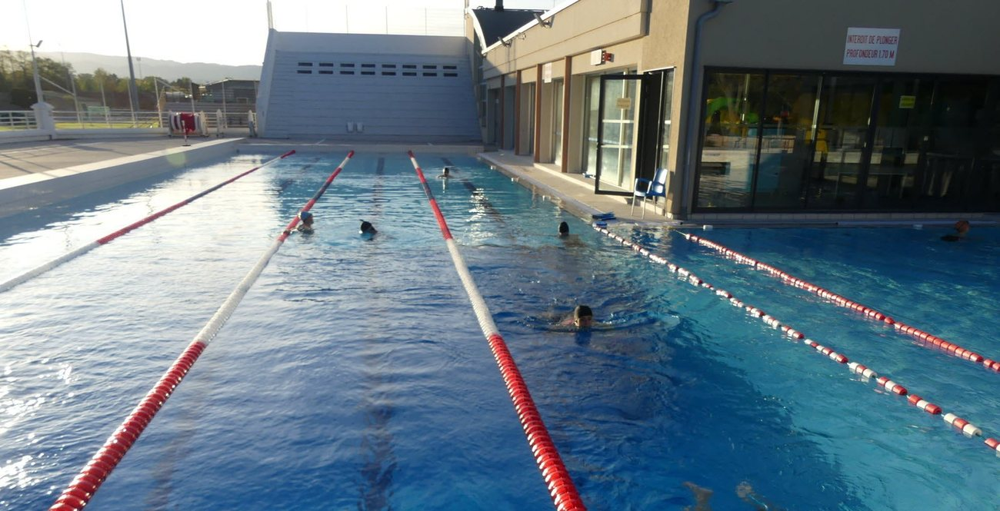
Projets
Huit projets menés en formation, de la création d’entreprise au hackathon. Les créations graphiques qui en sont sorties sont sur la page Réalisations.
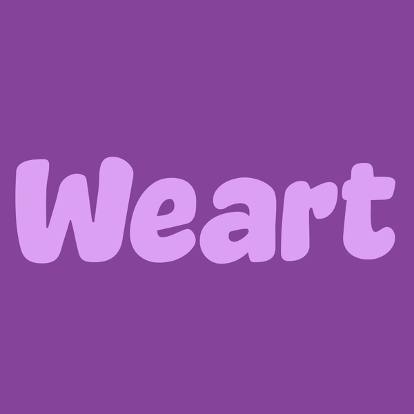
2025 — 2026
Mon entreprise
SAE GEMA
Projet phare
Weart — création d’entreprise

SAE GEMA
Weart est mon projet personnel, mené dans le cadre de la SAE GEMA mais porté comme une vraie création d’entreprise. Une activité de personnalisation de textiles et d’objets, avec une double offre : des produits standards accessibles et des créations originales en collaboration avec des artistes. Projet distinct de mon stage chez RC Créations.
Résultats
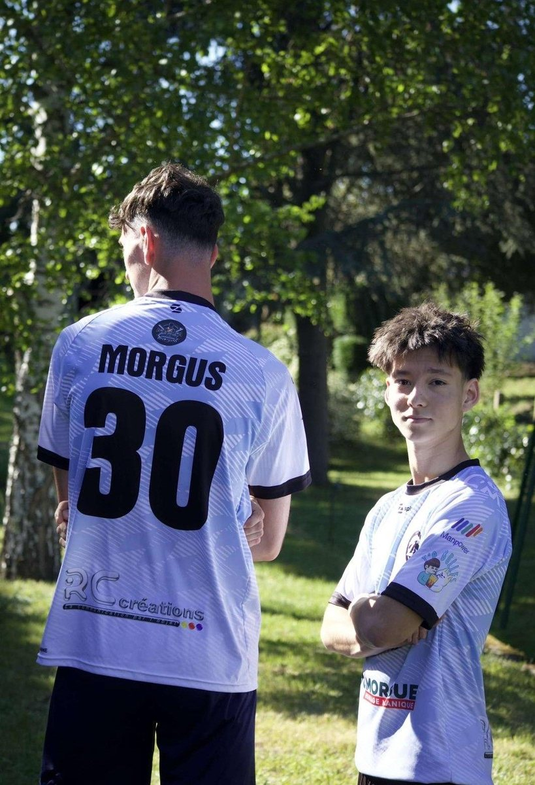
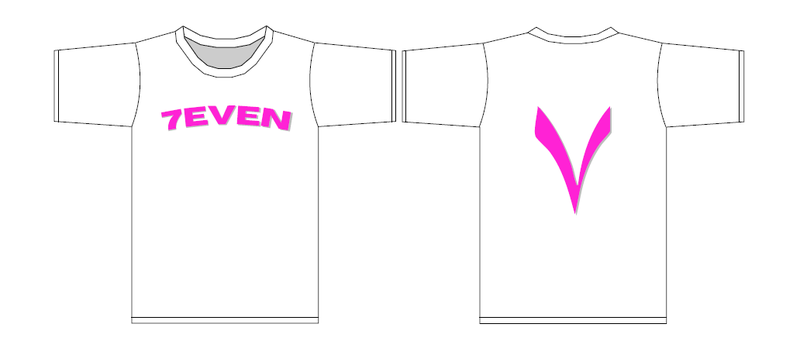
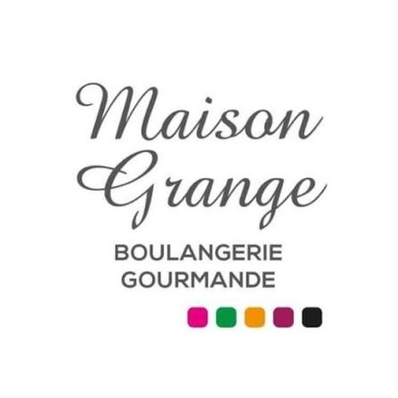
2025 — 2026
Projet en groupe
SAE 5.01
Conseil
Transformation numérique — Maison Grange

SAE 5.01
En groupe, nous avons accompagné Maison Grange, une boulangerie-pâtisserie-traiteur (trois points de vente, 20 collaborateurs), dans la numérisation de ses outils de gestion.
Résultats
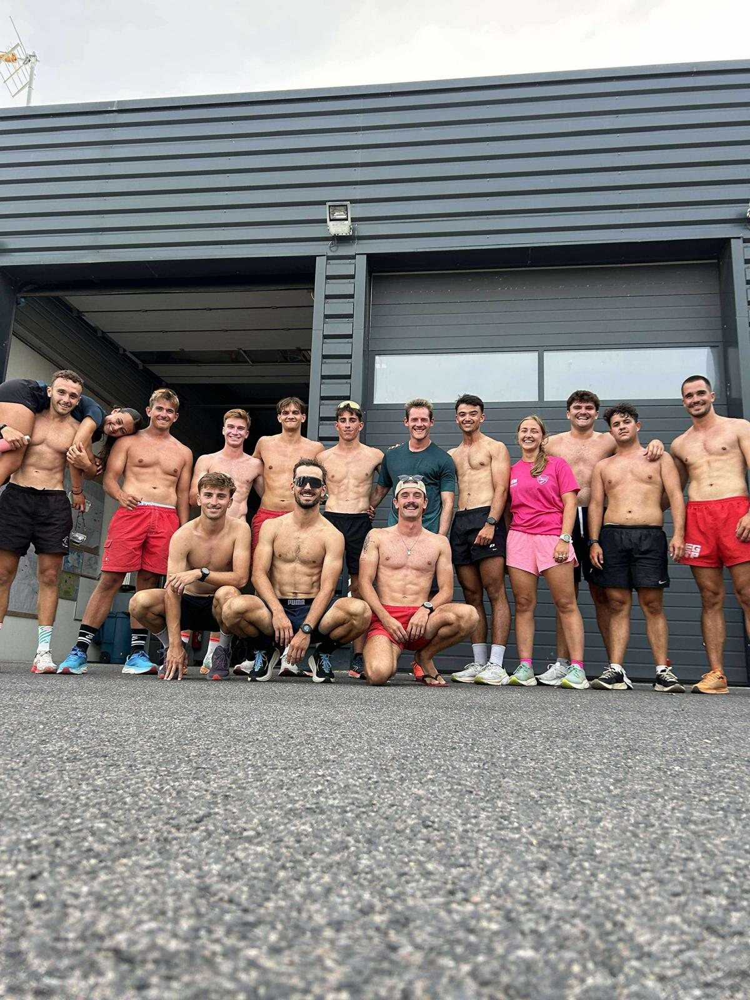
2024 — 2025
Projet en groupe
SAE GEMA 5.02
Management
Encadrement d’une équipe

SAE GEMA 5.02
Cette SAE GEMA porte sur l’encadrement optimal d’une équipe. L’objectif était d’organiser le travail d’un collectif, de répartir les rôles, d’animer et de motiver les membres, puis d’évaluer la performance de l’équipe tout en ajustant mon mode de management.
Résultats
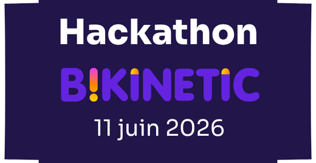
2025
Hackathon B-KINETIC
Saint-Étienne
Innovation
Flam Zero

Saint-Étienne
Le hackathon B-KINETIC réunissait l’Université Jean Monnet Saint-Étienne, Saint-Étienne Métropole et plusieurs établissements du territoire pour stimuler l’innovation et l’entrepreneuriat. En équipe, nous avons imaginé Flam Zero.
Résultats
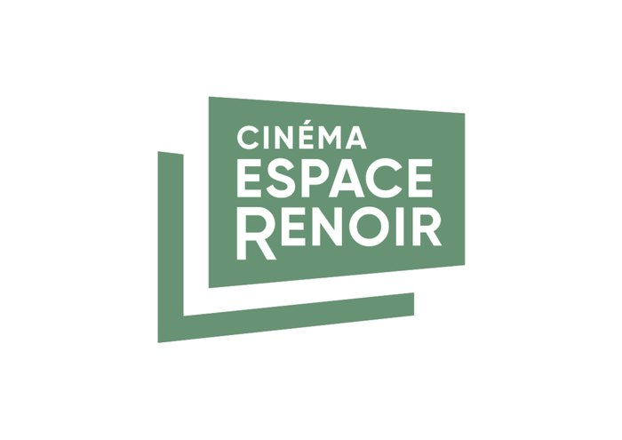
2024 — 2025
Projet en groupe
Roanne (42)
Expérience client
Espace bar & bibliothèque — Cinéma Espace Renoir

Roanne (42)
Un projet de développement d’un lieu de vie au sein du Cinéma Espace Renoir : un espace bar et bibliothèque à imaginer et à promouvoir.
Résultats
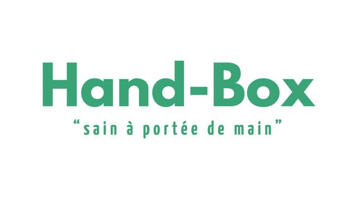
2024 — 2025
Projet entrepreneurial
IUT de Roanne
Entrepreneuriat
Handbox

IUT de Roanne
Un projet entrepreneurial complet construit pendant la formation, pour s’entraîner sur tout le cycle de création d’une activité, du modèle économique jusqu’à l’identité de marque.
Résultats
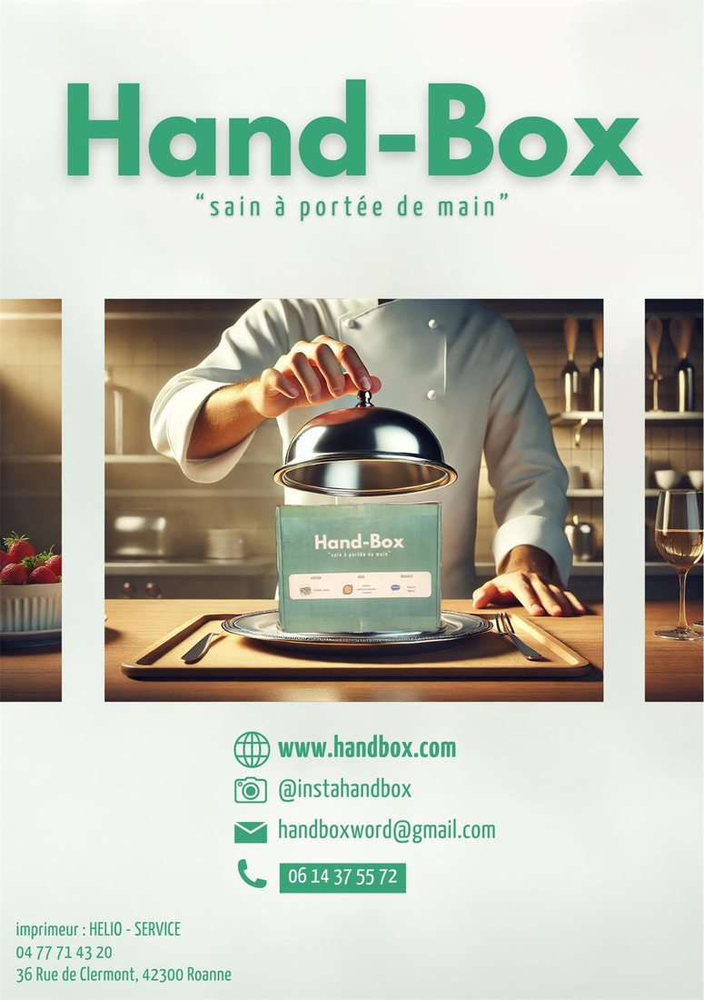
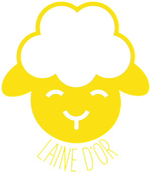
2024 — 2025
Projet entrepreneurial
IUT de Roanne
Entrepreneuriat
Laine d’or

IUT de Roanne
Second projet entrepreneurial complet de la formation. L’exercice était le même que pour Handbox, mais sur un positionnement artisanal qui demandait un univers de marque très différent.
Résultats
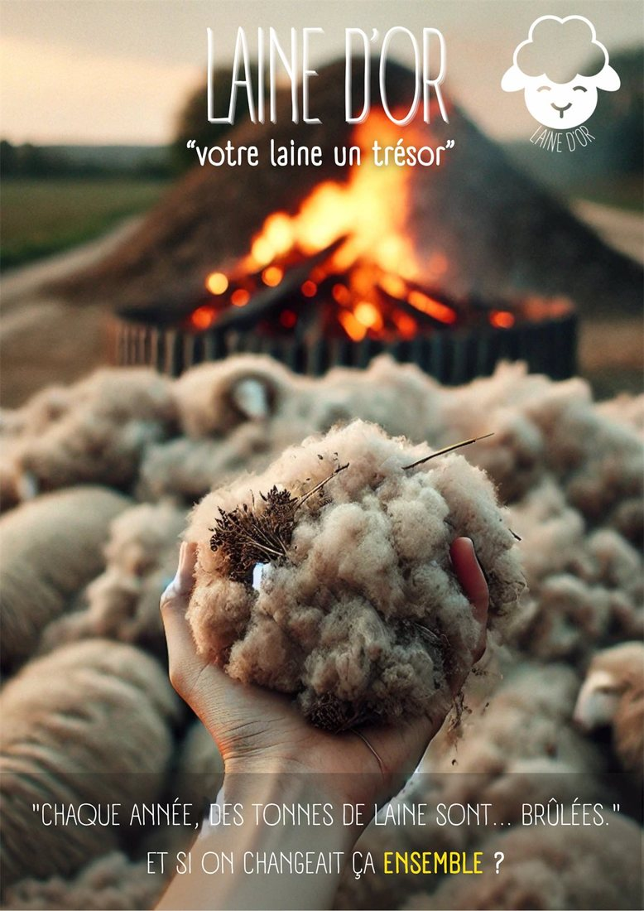
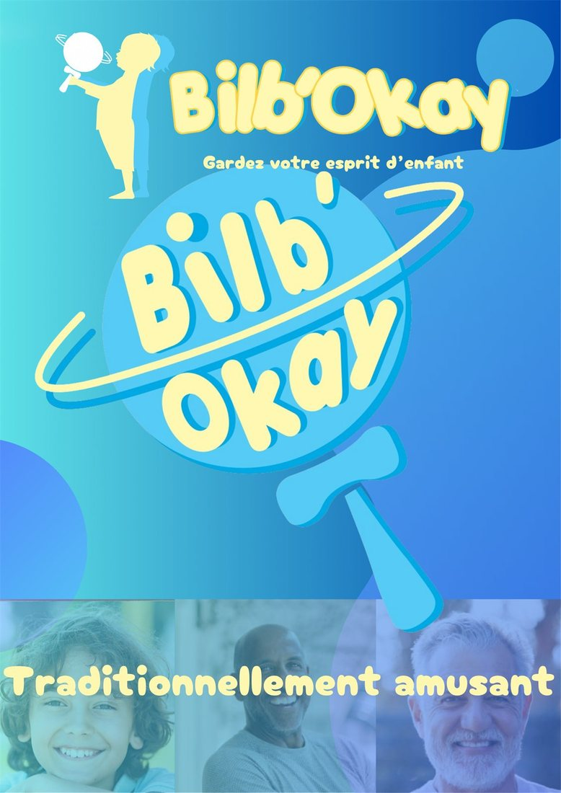
2024 — 2025
Projet entrepreneurial
IUT de Roanne
Entrepreneuriat
Bilb’okay

IUT de Roanne
Un troisième projet entrepreneurial mené sur le même cycle complet, avec son propre positionnement et son propre support de communication.
Résultats